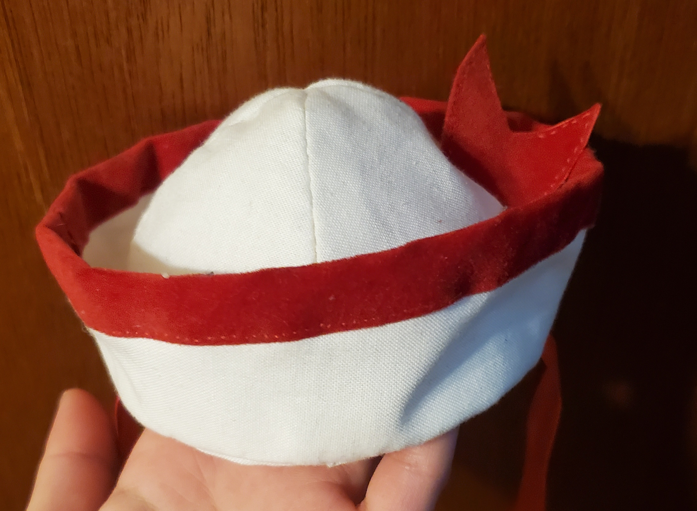

My name is Poy Garcia and welcome to my online house! I am half Lao and half Hispanic though those things have no correlation to what im about to shove into this document. I like to listen to any kind of music but lately I've been listening to maximum the hormone which will most likey start to reflect into these documents the more I stare at them.
Because I am continuing to use most of the text I used last time, I think I have to expand more about myself. I don't really know what you would like to know about me so I'm just going to list some more things like I am writting an essay about myself. Except I am just rambling to a screen which will later on be shown to my professor.
I'm not very sure what's intresting about myself, but I have been told I am a little crazy. Just a little silly, unhinged if I say so myself. I tend to make things more complicated than they have to be which causes a lot of problems for myself. Like right nw because I have an hour left before I have to turn this assignment in.
I also am short
You didn't really need to know that fact but it comes up later so to mickey mouse "it's a mystery tool we'll need for later"
I say a lot of the time that I want to be taller, because I am at the nice height of a 12-year old. But also I don't do very well with change so when I actually get taller I lose my mind because the number is wrong. Who knows why I lose my mind over it but it is somthing I do.
Maybe my true intention is to be like a cat or a bird that can be purched anywhere high and look down upon the world. I could be annoying from high ground, which sounds like dream come true.
Hobbies I part-take in
I realized last time, I didn't actually explain any of the hobbies that I part-took in. I feel like that was very disrespectful on part so I'm actually going to tell you them but in list form so I can fill the requirement WHILE MAKING IT LOOK COOL OH YEAH BABY
Things I like to do!
for fun
for spite/I have to
I don't think this is how you use a table... *shrug*
Cleaning
Sewing
Hide and Seek
Also cleaning
Cosplay!
Homework past the due date
Nap !!!
stay up late
As you can see from this very informational graph, you can tell that I fit within the routine that a child would follow. This makes zero sense as I am supposed to be a college student but that somehow doesn't stop me. In fact, I took a nap on my grandparents floor just 2 hours ago. It was very comfy,, I miss that nap ;w;;
Also, though I do actually don't mind sewing, I find it very tedious and therefore don't do it often. I think I'm okay at sewing, but I can only hand sew. I have never used a sewing machine in my life because every single one at my house is broken. Technically I've used my friend's but that was 2 years ago and for like 30 minutes so it doesn't really count. My grandma can use a sewing machine though! She makes traditional lao clothing.
Important things to know about me !

Tuxedo sam hat I hand sewed
I tend to speak a bunch of nonsense
I like to play rhythm games
I'm very shy meeting new people
I enjoy eating sweets
I am extremely silly/unserious
Some of my interests are
Batman
Mo Dao Zu Shi
Ensemble Stars
Mystic Messener
Tiger & Bunny!
Death Note
Sanrio
Omniscient Reader's Viewpoint
Link Click
Also last time I did not really tell what music I listened to besides maximum the hormone. I usually listen to them when I need energy to get stuff done. Though most of the time I listen to groups like Frederic, Tally hall, Scrubb, Unison Square Garden, and Kenshi Yonezu to name a few.
I do listen to western music I swear. Recently I just have had trouble finding groups that had the same kind of vibe. Maybe it's because this band 'I Don't Know How But They Found Me' (IDKHOW) hasn't had a comeback in almost 2 years but who knows. I don't.
I guess the Last thing I can tell you about myself is that they have trapped me at my grandma's house (they didn't) They're not letting me leaveeeeeee (we can leave whenever) I am Trapppppeddddddddddd (I'm not)